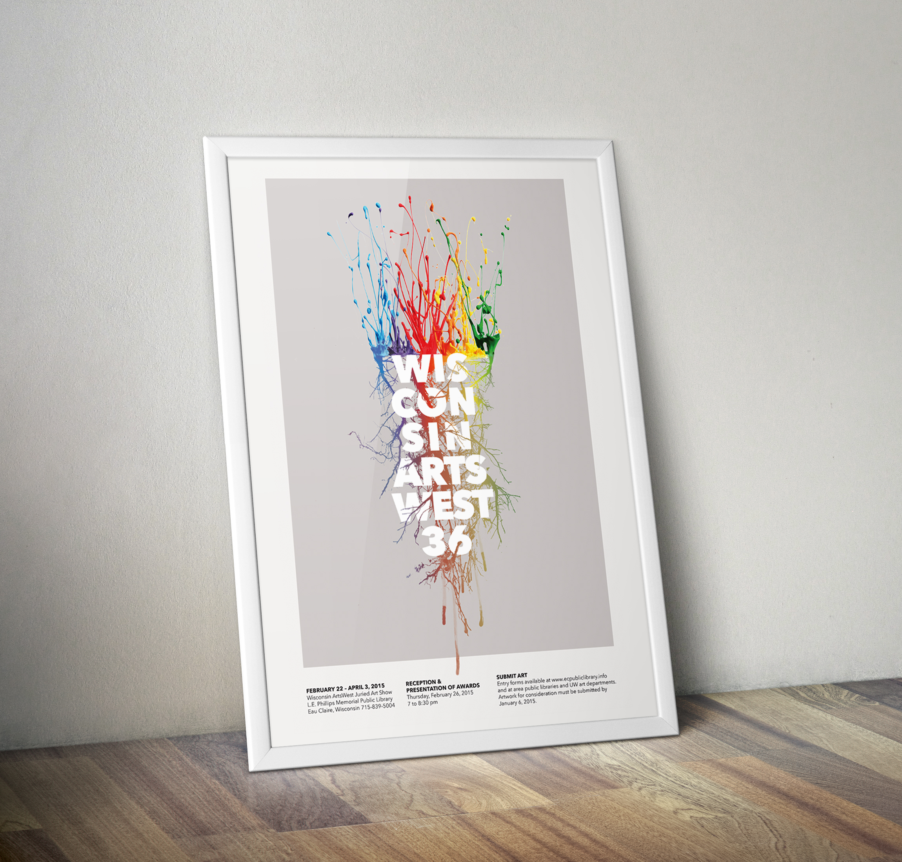
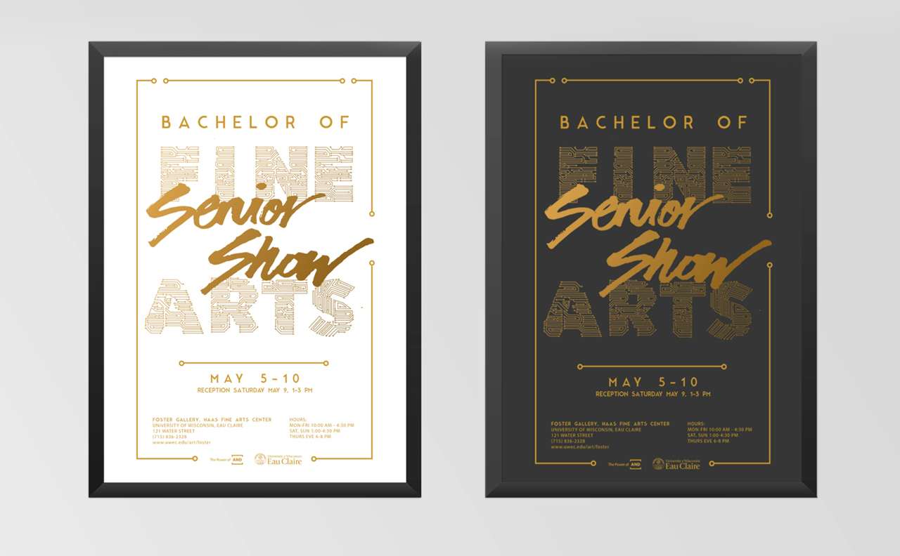
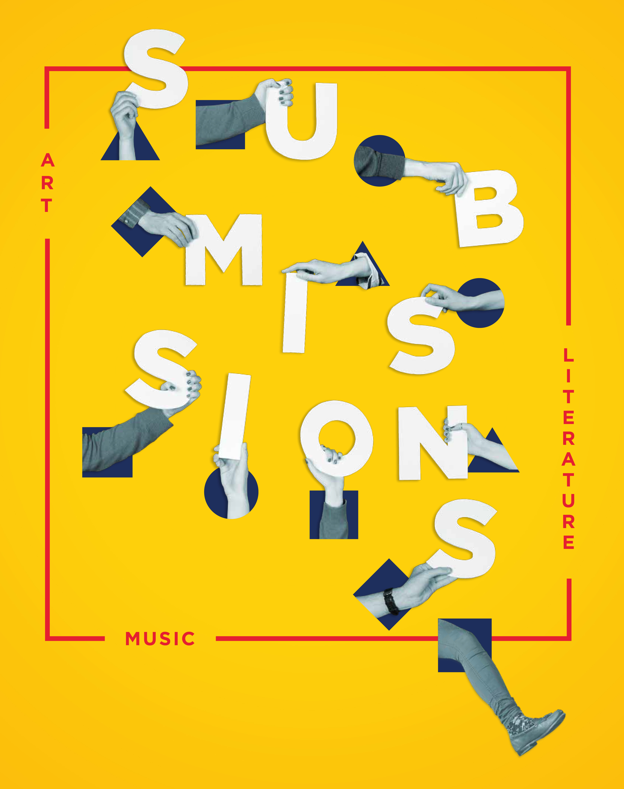
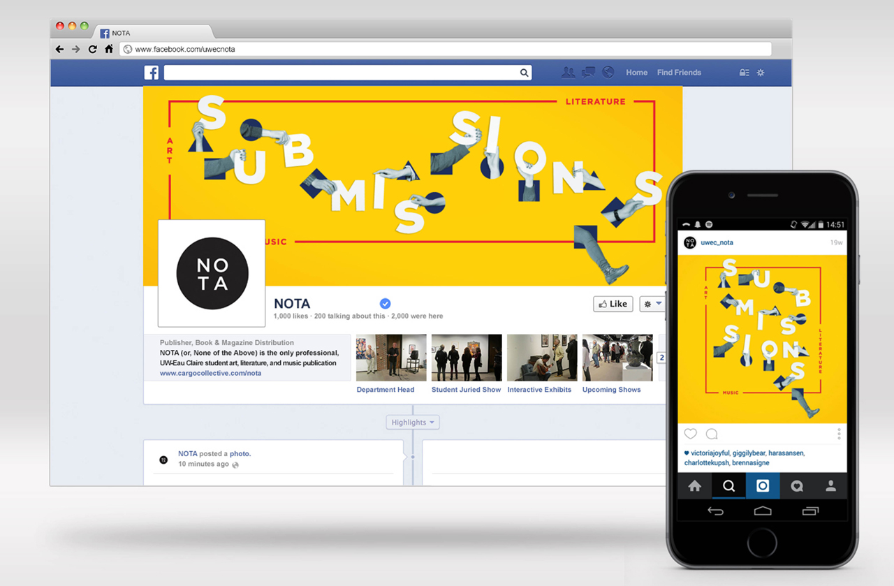

I enjoy creating promotional posters for creative events because the goal is to create something representative of a diverse body of work that also can stand alone as its own work of art. These three pieces were made for different art events in the Eau Claire area, and all of them included printed posters as well as social media posts.
>> After adding a social campaign (Facebook, Instagram, and Twitter) to the usual print campaign for NOTA submissions, the increase in turnout from the last submissions was huge, with over 50 more people submitting and even more showing up to vote on artwork.
>> To create the posters shown, I used many kinds of digital collage elements, including found photography, studio photography, and hand lettering.
WISCONSIN ARTSWEST
2014


BFA SENIOR SHOW
2015

NOTA SUBMISSIONS
2015
Created in collaboration with Bryce Kunkel, Cheryl Peick, and Zachary Oliphant.

